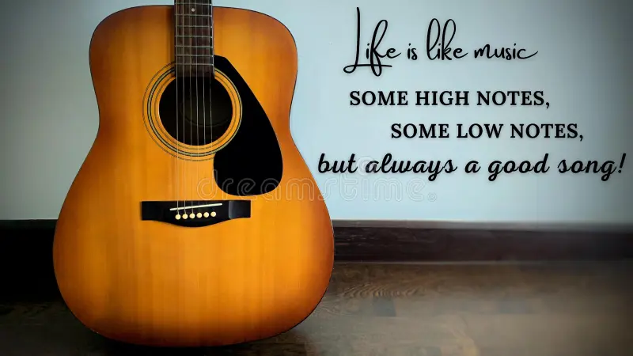

Music: Art of arranging sound
Music, art concerned with combining vocal or instrumental sounds for beauty of form or emotional expression, usually according to cultural standards of rhythm, melody, and, in most Western music, harmony. Both the simple folk song and the complex electronic composition belong to the same activity, music. Both are humanly engineered; both are conceptual and auditory, and these factors have been present in music of all styles and in all periods of history, throughout the world.
- Music is an art that, in one guise or another, permeates every human society. Modern music is heard in a bewildering profusion of styles, many of them contemporary, others engendered in past eras. Music is a protean art; it lends itself easily to alliances with words, as in song, and with physical movement, as in dance. Throughout history, music has been an important adjunct to ritual and drama and has been credited with the capacity to reflect and influence human emotion. Popular culture has consistently exploited these possibilities, most conspicuously today by means of radio, film, television, musical theatre, and the Internet. The implications of the uses of music in psychotherapy, geriatrics, and advertising testify to a faith in its power to affect human behaviour. Publications and recordings have effectively internationalized music in its most significant, as well as its most trivial, manifestations. Beyond all this, the teaching of music in primary and secondary schools has now attained virtually worldwide acceptance
- Music is everywhere to be heard. But what is music? Commentators have spoken of “the relationship of music to the human senses and intellect,” thus affirming a world of human discourse as the necessary setting for the art. A definition of music itself will take longer. As Aristotle said, “It is not easy to determine the nature of music or why anyone should have a knowledge of it.”